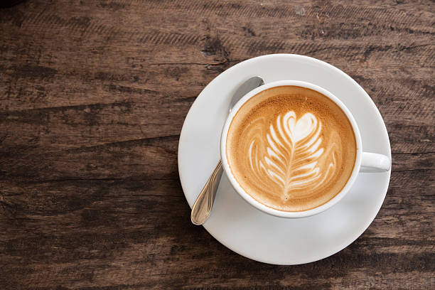

The Space
Warm corners, natural light, and the quiet hum of focus. Come as you are; stay as long as you need.
Brew Methods
Every technique is chosen intentionally — each one unlocks a different soul of the same bean.
Pour Over
Cold Brew
Espresso
AeroPress
Coffee Curiosities
Little wonders hidden inside every cup — did you know?
Coffee Is a Fruit
Coffee beans are actually the seeds of a cherry-like fruit. The ripe red or yellow cherries are harvested, and the bean sits at the center — technically making your morning cup a fruit juice.
The World's Second Trade
Coffee is the second most traded commodity on Earth, after crude oil. Over 2.25 billion cups are consumed every single day worldwide — a ritual shared across nearly every culture.
Discovered by a Goat
Legend says a 9th-century Ethiopian goat herder named Kaldi noticed his goats dancing energetically after eating red berries. Curious monks brewed the berries into a drink — and coffee was born.
Roast ≠ Caffeine
Contrary to popular belief, darker roasts have slightly less caffeine than light roasts. The longer roasting process breaks down caffeine molecules — so our gentle light roasts pack the real punch.